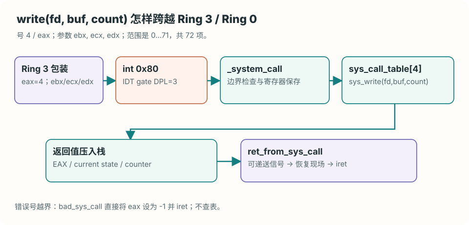
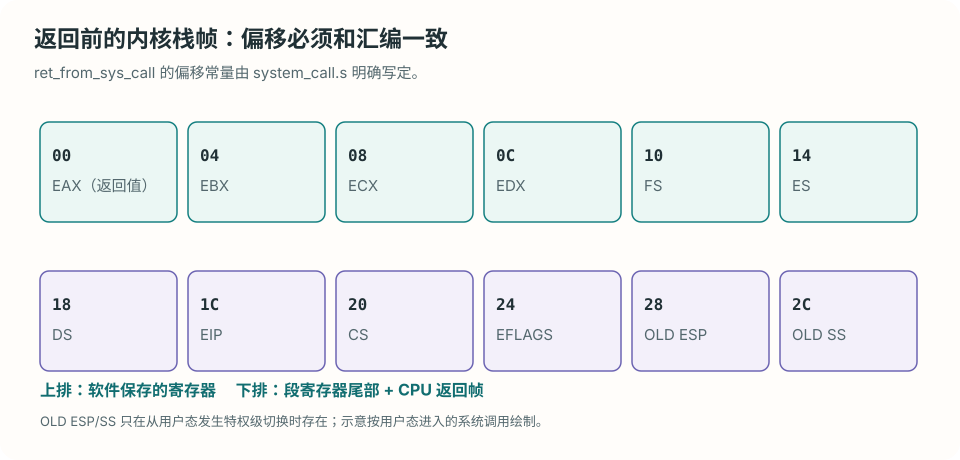

系统调用：一条 int 0x80 的寄存器与栈之旅
以 write(fd,buf,count) 为例核对 72 项系统调用表、参数寄存器、DPL=3 门、返回时的内核栈布局和信号检查。
int 0x80 · 72 项 ABI用户程序怎样请求内核写一个字节？
用户程序不能直接执行内核私有的磁盘控制指令，正常情况下需要通过系统调用接口请求内核执行有权限的操作。在 32 位 Linux 0.11 中，用户态的包装函数把系统调用号放在 EAX，把前几个参数依次放进 EBX、ECX、EDX，然后执行 int 0x80。
但这不只是“一条中断指令”：CPU 必须检查门权限、在需要时从 TSS 取得内核栈，保存返回现场；内核必须校验号是否在表内、把参数送给 C 实现，并正确恢复到用户代码。只看 sys_write 会漏掉最危险的交界面。

用户寄存器与系统调用编号
在 include/unistd.h 的 __LIBRARY__ 区段中可以找到 __NR_read=3、__NR_write=4。其早期 _syscall3 风格包装约定三个参数分别传给 EBX、ECX、EDX；EAX 承担调用编号和返回值。
EAX = 4 # __NR_write
EBX = fd # 第一个参数
ECX = buf # 第二个参数：用户逻辑指针
EDX = count # 第三个参数
int 0x80 # 软件中断进入内核
# 返回：EAX 是结果或负错误码注意用户指针不是内核直接可相信的物理地址。Linux 0.11 使用 FS 段寄存器和如 get_fs_byte 的访问宏来读取用户地址，还需为写入用户空间等场景进行相应的验证。把一个裸 memcpy 假装成已做合法性检查的 copy_from_user，不符合此版本源码。
0x80 如何进入 ring 0
第 8 章已看到 sched_init() 在 IDT 0x80 位置安装 set_system_gate(0x80,&system_call)。set_system_gate 是类型 15、DPL 3 的陷阱门，允许 CPL 3 的软件中断通过；转向 ring 0 时处理器利用 TSS 的内核栈指针完成栈切换，并保存用户态返回所需的状态。
此处保存的内容取决于是否跨越特权级。本章图解以用户态调用内核为例，因此包含旧 SS 和旧 ESP。不要把图解误套到内核态本来就是 CPL 0 的其他中断场景。
grep -n 'set_system_gate(0x80' kernel/sched.c
grep -n '_system_call:\|bad_sys_call:\|ret_from_sys_call:' kernel/system_call.s通过阅读这一阶段的汇编，能够解释“用户态不能直接跳进内核函数”的原因：软件 int 触发的是经过权限和硬件状态检查的门，而不是普通用户代码能任意执行的跨特权调用。
最致命的版本错误：不是 82 项
kernel/system_call.s 在 v0.11 定义 nr_system_calls = 72，并比较 EAX 和 nr_system_calls-1。无符号意义下超出 0..71 的编号走 bad_sys_call，将 EAX 设置成 -1 并 iret。include/linux/sys.h 中的函数指针表从 sys_setup 开始，对应编号 0。
nr_system_calls = 72
_system_call:
cmpl $nr_system_calls-1,%eax
ja bad_sys_call
# ... 保存寄存器与分派 ...这里的 ja 是无符号大于比较，不能简单替换成“有符号大于”；对负 EAX 值，它同样能拦截。已有旧稿写成了 82 个系统调用、NR_syscalls 常量和不在原文件中的宏展开，已全部移除。
系统调用号 71 和 72 分别会怎样？（点击展开解析）
71 是上界内的编号，程序可进入对应 sys_call_table 槽位；72 大于合法最大值 71，走 bad_sys_call 分支，返回 EAX=-1，而不会访问数组第 72 项。
不是一个神秘的 SAVE_ALL 宏
原始 _system_call 在检查 EAX 后依次压入 DS、ES、FS，再压 EDX、ECX、EBX。随后 DS、ES 设为 0x10，FS 设为 0x17，执行 call _sys_call_table(,%eax,4)。此时 C 函数按照约定从栈上取得参数，返回值在 EAX，接着又被压到栈中供共享返回代码恢复。
verify 0 <= EAX < 72
save DS, ES, FS, EDX, ECX, EBX
DS = ES = kernel_selector(0x10)
FS = user_data_selector(0x17)
result = sys_call_table[EAX](EBX, ECX, EDX)
push result
if current.state != RUNNING or counter == 0: reschedule这里是故意写成的行为提要，而非伪装成完整可编译汇编。_sys_call_table(,%eax,4) 中的 ×4 来自每个函数指针 4 字节。实际 C 处理函数的参数个数会因系统调用而变化，不能一律按三个参数执行。
从栈偏移反推 iret 的控制权恢复
汇编注释明确给出 ret_from_sys_call 的栈布局：EAX 在 0x00(%esp)，EBX 在 0x04，ECX 在 0x08，EDX 在 0x0c，FS/ES/DS 在 0x10/0x14/0x18，EIP/CS/EFLAGS 在 0x1c/0x20/0x24，从用户态切入时旧 ESP/SS 在 0x28/0x2c。

这样就能理解为何返回代码要按固定顺序 pop 寄存器，然后才执行 iret：iret 会从剩余的 CPU 帧恢复 EIP/CS/EFLAGS，发生跨级返回时还要恢复用户 ESP/SS。若一条新的 push 没有对应调整，所有后续偏移都会错位。
为什么系统调用返回前还要检查信号
调用完成后，system_call.s 检查当前任务的状态和 counter，必要时调用调度器。ret_from_sys_call 还特别跳过 task 0、核对返回代码/栈段是否为用户选择子，再用 signal & ~blocked 的位图运算找出可递送信号，调用 _do_signal 安排处理。并非任何中断返回都无条件执行同样的信号逻辑。
grep -n '_sys_call_table\|nr_system_calls\|ret_from_sys_call' kernel/system_call.s
grep -n 'sigaction\|blocked\|signal' include/linux/sched.h
grep -n 'get_fs_byte\|put_fs_byte' include/asm/segment.h该检索可以帮助区分“返回值 EAX”“任务状态 counter”“信号位图”和“用户内存访问”四种不同数据。后续学习信号机制时，可以重新打开本章并沿该分支继续追踪。
来源与版本界限
- kernel/system_call.s：
nr_system_calls=72、入栈、表分派、返回与信号。 - include/linux/sys.h：v0.11 的调用函数指针表。
- include/unistd.h：系统调用编号与包装宏。
- kernel/sched.c、include/asm/system.h：0x80 门安装与 DPL。
- include/asm/segment.h：本版 FS 段访问用户空间的原始宏。
下一章把返回路径里的 counter 和 schedule 放大：何时必须让出 CPU，内核选择哪个任务继续执行？